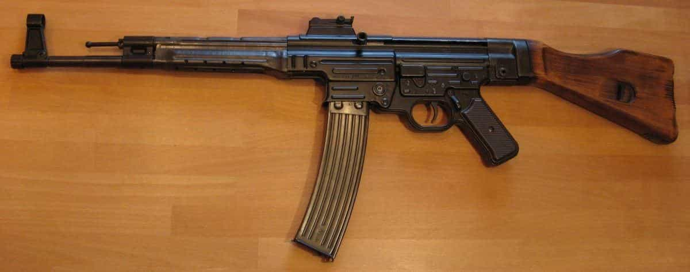
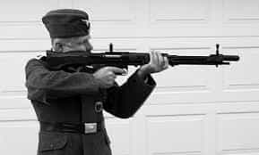
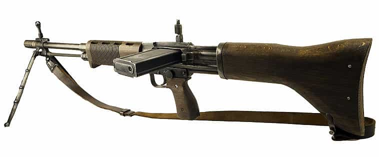
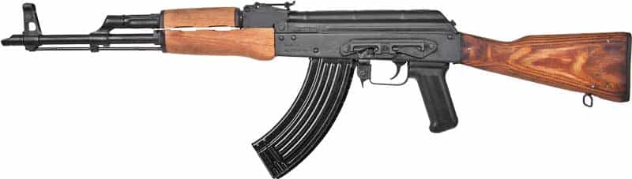

Quintus can be found at qcurtius.com. He is the author of the books On Duties, Thirty Seven, Sallust: The Conspiracy Of Catiline And The War Of Jugurtha, and other books. His work has been reviewed at Taki's Magazine. He can be followed on Twitter


During the First World War, the soldiers of all the belligerent nations carried rifles that were designed for accurate long-range fire. Germany had its Mauser; France its Lebel; Britain its Lee-Enfield; Russia its Mosin-Nagant; and the United States its Springfield. These weapons in general performed adequately for what they were designed to do.
But towards the end of the war it became clear that most infantry engagements took place at ranges that were well below five hundred meters. The accurate bolt-action rifles of the day were designed for accuracy at much longer ranges. Military innovators in Germany during the 1920s drew the obvious conclusion that other nations did not: it would be better to design a weapon that replaced long-range accuracy with a portable, higher volume of fire.
By the late 1930s the German armaments industry had succeeded in developing what it called the kurz (“short”) round in 7.92-mm caliber. A basic design by Louis Schmeisser was produced to fire the new cartridge; this design was called the Maschinenkarabiner 42(H). This name was eventually changed to Maschinenpistole 43, or simply MP 43. Initial trials conducted with the weapon proved to be a brilliant success, and soon the German Army found itself deluged with requests for it from front-line units.

The Sturmgewehr 44
Apparently Hitler, who could be conservative in matters of infantry tactics, was initially opposed to the radical innovation that the new rifle represented. But he could also be pragmatic where results mattered, and when it became clear that the MP 43 gave a qualitative edge over the Soviets, he was quick to change his mind. The name of the weapon eventually became Sturmgewehr 44.
The Luftwaffe was also absorbed in the development of an “assault rifle” of its own. The fruit of its labors was the innovative and highly advanced Fallschirmjägergewehr 42 (FG 42), which looked something like a hybrid between a rifle and a light machine gun. It was a gas-powered weapon with a bipod, large plastic butt, and a side-mounted box magazine. The side-mounted magazine was not precisely a success; it allowed dirt to enter into the mechanism and was prone to jamming.

All in all, the weapon was effective but could never be produced in sufficient numbers to meet demand. It deserves a place in the story of the development of the assault rifle, however, because it did influence small arms design after the war was over, especially the gas-powered action.

The Fallschirmjägergewehr 42
Only about 7,000 FG 42s were issued by the end of the war. Tens of thousands of Sturmgewehr 44s, however, were manufactured, and it proved to be a great success on the Russian front.
One glance at the Sturmgewehr 44 makes it clear that this weapon is the father of the modern assault rifle. The sloping banana magazine ensures that the user can bring a large volume of fire to bear on his target. Mass production was the original goal here: the weapon is firmly constructed from sheet metal with pins and stampings. The legendary Russian AK-47 is—to be blunt—simply a mass-produced knock-off of the Sturmgewehr. German designers had wanted something that combined the best features of a traditional rifle with the automatic firepower of the submachine gun.
Submachine guns were widely used in combat in the Second World War, and they did what they were designed to do: that is, to deliver a large volume of lead downrange at an enemy. But they used pistol rounds (either 9-mm or .45 rounds) that could not deliver accurate fire beyond more than a very limited range. The assault rifle was intended to solve this problem.
The “assault rifle revolution” changed how infantry engagements were fought. No longer would squads of infantry have to rely on light or heavy machine guns for support at all times. They could load themselves with magazines and strike out on their own, freeing themselves from the tether of supporting fire.

The Soviet AK-47 copied the design of its German predecessor
There were even more innovations that came with the weapon. An infrared night sight (called the Vampir) was made to be fitted to the rifle, but it does not appear to have been widely used. Small arms historians even tell us that designers experimented with a curved barrel for the rifle that would allow a rifleman to fire around the corner of a building from a position of safety. It was apparently made specifically for urban combat, but as far as I have been able to determine, it was never used in action.
What is certain is that the Sturmgewehr 44 was one of the most influential weapons to come out of the Second World War. As noted earlier, it was the model on which the Soviet AK-47 and SKS was based. Western nations were slower to accept the idea of the assault rifle, however. The reasons for this may lie in traditional military conservatism in the US and Britain, as well as the fact that existing production facilities were already configured to churn out old-school weapons like the M1 Garand rifle.
It was inexcusable that US forces were not equipped with an assault rifle during the Korean conflict. The Americans would have to wait until the mid-1960s, when the M16 rifle with its 5.56 mm round made its appearance, to catch up to what German engineers were doing in the 1940s.
Read More: Contemporary Art Reflects Our Cultural Degeneracy